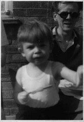

Thursday, April the 1st, 2004
back to: title, date or indexes
An anonymous reader has sent what is claimed to be a photograph of Dobson. I suspect this to be an April Fool's Day prank, but have sent the snap to Mr Poxhaven, soliciting his expert opinion. The envelope—with a smudged postmark—contained nothing else to indicate its provenance. Scribbled on the back of the photograph are just three words: “This is Dobson”, which is less than helpful as it is unclear whether it refers to the child clutching an ice lolly or to the gaunt, bespectacled adult behind him.
